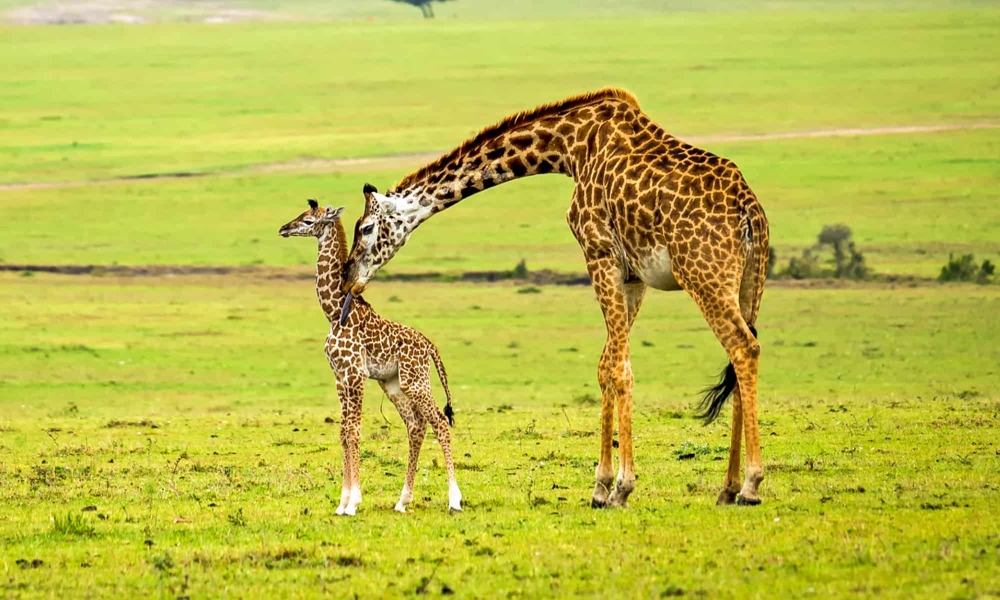

Les 15.9 Huiswerk
Korte inleiding.
De giraffe is een groot dier. Ze kijken op bijna alle ander dieren neer. Je zou zelfs kunnen zeggen dat giraffen een
beetje uit de hoogte doen.
Ze eten op grote hoogte maar ze kakken op de grond. Zouden zij hun eigen kak geur ruiken vanuit daarboven?
